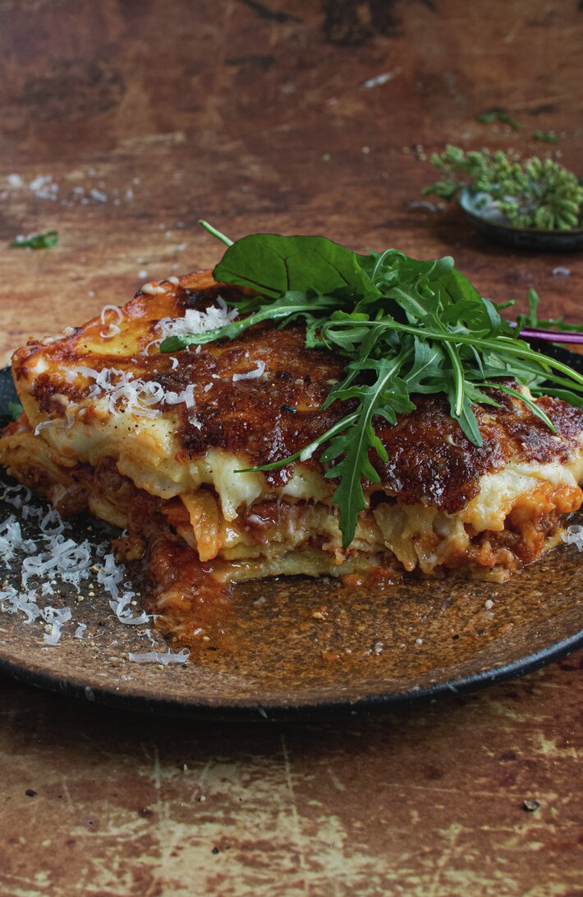

Lasagna

Description
A favorite italian dish for many. Layers of meat and bechamel, divided by plates of pasta.
As the lasagna is divided, so will the dinner company be over who gets to take the leftovers and/or lick the casserole dish.
Ingredients
- 9 lasagna plates
- 3 dl cheese
- Meat sauce
- 150 g bacon
- 2 tbsp neutral oil
- 400 g ground beef
- 1 onion, finely chopped
- 1 carrot, finely chopped
- 1 celery, finely chopped
- 1 tbsp neutral oil
- 2 tbsp tomato paste
- 800 g canned tomatoes
- 2 dl broth
- 2 tsp oregano, dried
- Bechamel
- 3 tbsp butter
- 3 tbsp flour
- 6 dl milk
- 5 tbsp parmesan
- 1 tsp salt
- 0.5 tsp pepper
- 0.5 tsp ground nutmeg
- Garlic bread
- Green salad
Steps
- Dice the bacon into small pieces. Heat the oil in a pan and cook the bacon until golden. Remove the bacon from the pan.
- Add a bit of oil. Using high heat, brown the ground beef in two rounds. Remove the ground beef from the pan.
- Lower the heat to medium and add onion, carrot, and celery. Let it cook till the veggies are soft and shiny.
- Add the bacon and beef back to the pan. Make room in the middle of the pan, add some oil, and fry the tomato paste for a few minutes.
- Add canned tomatoes, broth, and spices. Let it cook for at least 10 minutes.
If you have more time, let it cook on low heat under lid for a few hours.
Remember to stir a few times. Taste and add salt and pepper as needed.
- In another pot, melt the butter. Stir in the flour. While stirring, add the milk a bit at a time.
Let it carefully boil for 10 minutes, remember to stir! The sauce should be pretty thick.
Add parmesan and spices.
- Preheat the oven to 200 C.
- Place meatsauce, pastaplates, and bechamel layer by layer in a casserole dish. Finish with pastaplates and a layer of bechamel.
Shake cheese over.
- Cook the lasagna in the oven for 30-40 minutes. Let it rest for a few minutes before eating.
- Serve with garlic bread and a green salad.